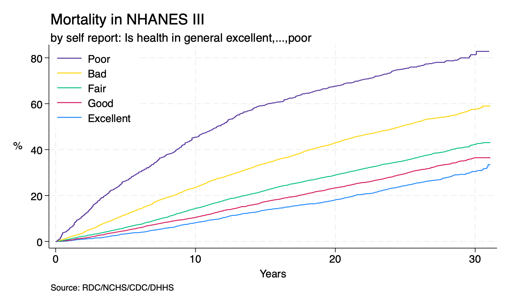

r(mean)#
Today we are going to talk about
macros:A. local system macros
name content `c()` `r()`
B. user-defined macros
`local` e.g., `m_iqr` `global` e.g., ${workdir}
But we need data to demonstrate these macros. So lets curate a dataset: nh3andmort.dta
Copy & paste the script below into a .do file and do!
You may save it as nh3andmort.do. If you encounter any trouble in this preliminary step please do post it on CoursePlus. Maybe a fellow student or a member of the teaching team may be able to help.
Import data for todays class:
qui {
if 0 { background:survey,cohort,chapter:`net search'
1. import nhanes iii
2. adult,exam,lab
3. mortality-linkage
4. non-parametric survival
5. semi-parametric survival
}
if 1 { //methods:macros,.dofiles,github
cls
clear
capture log close
log using nh3andmort.log,replace
timer clear
timer on 1
#delimit ;
global varlist
seqn 1-6
eligstat 15
mortstat 16
ucod_leading 17-19
diabetes 20
hyperten 21
permth_int 43-45
permth_exm 46-48 ;
#delimit cr
global nchs https://ftp.cdc.gov/pub/Health_Statistics/NCHS/
global linkage datalinkage/linked_mortality/
global nh3 NHANES_III
global github https://raw.githubusercontent.com/
global jhustata jhustata/book/main/
timer off 1
}
if 2 { //mortality,codebook,eligibility
timer on 2
infix $varlist using "$nchs$linkage${nh3}_MORT_2019_PUBLIC.dat", clear
do "${github}${jhustata}mortlab.do"
drop if inlist(eligstat,2,3)
duplicates drop
save nh3mort,replace
timer off 2
}
if 3 { //survey,baseline:adult,exam,lab
timer on 3
do "${github}${jhustata}nhanes.ael.do"
timer on 31
clear
do adult.do
rename *,lower
save adult.dta,replace
timer off 31
timer on 32
clear
do exam.do
rename *,lower
save exam.dta,replace
timer off 32
timer on 33
clear
do lab.do
rename *,lower
save lab.dta,replace
timer off 33
timer off 3
}
if 4 { //link survey->mortality after merge
timer on 4
clear
use adult
merge 1:1 seqn using exam,nogen
merge 1:1 seqn using lab,nogen
merge 1:1 seqn using nh3mort,nogen keep(matched)
timer off 4
}
if 5 { //save analytic file
timer on 5
compress
lab dat "NHANES 1988-1994, survey & mortality"
noi save "nh3andmort.dta", replace
timer off 5
}
if 6 { //kaplan-meier curve,cox regression
timer on 6
lookfor mort
codebook mortstat
lookfor follow
g years=permth_exm/12
lookfor health
codebook hab1
global subgroup: var lab hab1
stset years, fail(mortstat)
#delimit ;
sts graph if inrange(hab1,1,5),
by(hab1)
fail
ti("Morality in NHANES III",pos(11))
subti("by self report: ${subgroup}",pos(11))
yti("%",orientation(horizontal))
xti("Years")
per(100)
ylab(0(20)80,
format(%3.0f)
angle(360)
)
legend(on
lab(1 "Excellent")
lab(2 "Good")
lab(3 "Fair")
lab(4 "Bad")
lab(5 "Poor")
ring(0)
pos(11)
col(1)
order(5 4 3 2 1)
)
note("Source: RDC/NCHS/CDC/DHHS")
;
#delimit cr
graph export nh3andmort.png,replace
stcox i.hab1 if inrange(hab1,1,5)
timer off 6
}
noi timer list
noi timer clear
}
Explore the versatility of macros:
Now let’s explore return values, macros, and our first programs with nh3andmort.dta:
sum hsageir
return list
Let’s add a slight variation to this theme:
sum hsageir, detail
return list
Display some of these summary statistics within a sentence
di "In this population of `r(N)' adult participants identified from NHANES III, the median age was `r(p50)' years (IQR, `r(p25)'-`r(p75)')"
Whatever is held within a backquote (just below the esc key) and a forward quote is a local macro.
And what is punctuated with a dollar sign is a global macro.
Please scroll down this Stata document for a formal definition of these two types of macros.
Some local macros will be defined by the user with a local name command syntax.
But in other scenarios local macros will automatically be generated by Stata.
Think of the commands return list, foreach, forvalues, etc.
foreach v of varlist hsageir bmpht bmpwt haza8ak1 cep ghp {
qui summ `v', detail
di "The median `v' is `r(p50)' (IQR, `r(p25)'-`r(p75)')"
}
In the above example “v” fits the Stata definition of a local macro.
And we gave it its name in the foreach v statement.
Let’s make the above output more appealing by naming a few macros (syntax: local name) and defining their content (syntax: local name: di “something” or local name = 3)
foreach v of varlist hsageir bmpht bmpwt haza8ak1 cep ghp {
qui summ `v', detail
local p25: di %5.1f r(p25)
local p50: di %5.1f r(p50)
local p75: di %5.1f r(p75)
di "The median `v' is `p50' (IQR, `p25'-`p75')"
}
In the above example we have replaced the return values, r(), with three new macros: p50, p25, and p75. The content of these macros is essentially a format of display (%5.1f). We immediately witness the effect of these macros on the output. Let’s delve a little more into the aesthetics of the output:
foreach v of varlist hsageir bmpht bmpwt haza8ak1 cep ghp {
qui summ `v', detail
local m_iqr: di %5.1f _col(30) r(p50) " (IQR, " %5.1f r(p25) "-" %5.1f r(p75) ")"
di "The median `v' is `m_iqr'"
}
Much better. But one more thing…
rename (hsageir bmpht bmpwt haza8ak1 cep ghp)(Age Height Weight SBP SCreat HbA1c)
foreach v of varlist Age Height Weight SBP SCreat HbA1c {
qui summ `v', detail
local m_iqr: di %5.1f _col(30) r(p50) " (IQR, " %5.1f r(p25) "-" %5.1f r(p75) ")"
di "The median `v' is `m_iqr'"
}
Finally something of publication quality!
We have used a loop command to perform the same task over and over on different variables.
These variables have all been Continuous. Do you want to perform a similar loop function on
binary and multicategory variables? Binary: sex, history of hypertension, history of diabetes, history of smoking;
Multicategory: race and education. This will be a nice way to look through the script from last weeks chapter: pwd.
Meanwhile, amongst your several outputs from running the script that produced nh3andmort.dta is the figure below:

Can you tell what content of this graph is specified by a macro?
Let’s now move on to regression output. Lets set up the data for Cox regression:
desc permth_exm
g years=permth_exm/12
We’ll use years as the time variable and mortstat as the event.
stset years, fail(mortstat)
Now we are all set for Cox regression
stcox i.hab1 if inrange(hab1,1,5)
How may we extract return values following a regression model? Because of the potential for so many coefficients in regression, we have to specify which specific coefficient we are interested in, thus:
lincom _b[2.hab1]
return list
di exp(r(estimate))
This should look familiar: a command, return list, and the display of a select group of return values